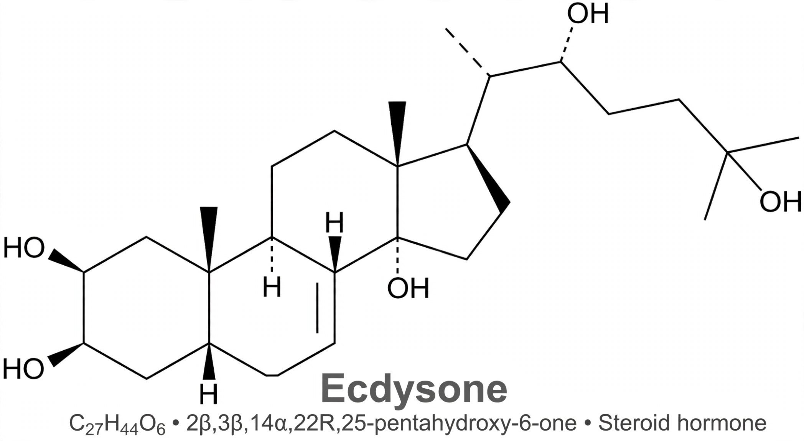

| Chemical formula | C27H44O6 |
|---|---|
| Molar mass | 464.64 g/mol |
| Type | Steroid hormone (ecdysteroid) |
| Target | Ecdysone receptor (EcR) |
Ecdysone is a steroidal prohormone of the major insect moulting hormone, secreted from the prothoracic glands of insects. In target tissues it is converted to the active hormone 20-hydroxyecdysone, which binds the ecdysone receptor and triggers the gene-expression cascades that drive moulting (ecdysis) and metamorphosis. Collectively, these compounds are called ecdysteroids; the related hormone of crustaceans and other arthropods shares the same regulatory role.
Ecdysone was first isolated in 1954 by Adolf Butenandt and Peter Karlson, who extracted just 25 milligrams of crystalline hormone from 500 kg of silkworm pupae — a landmark in insect endocrinology. Its secretion is controlled by the brain hormone PTTH (prothoracicotropic hormone), and ecdysteroid pulses, balanced against juvenile hormone, determine whether a larva undergoes another larval moult or transforms into a pupa and adult.
Ecdysone signalling in Drosophila became a foundational model of hormone action: the visible "puffs" that appear sequentially on giant salivary-gland chromosomes in response to the hormone demonstrated hormone-induced gene activation. Synthetic ecdysone agonists (e.g. tebufenozide) are used as insecticides that disrupt moulting in pest larvae, and phytoecdysteroids in plants may serve as defences against insect herbivores.